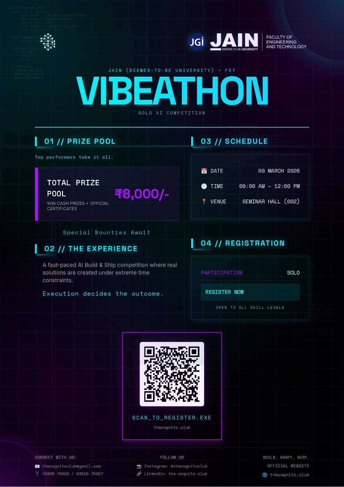

About Us
More Than a Club. A Community
At The Cognito Club, we're more than just a student group—we're a vibrant community at JAIN (Deemed-to-be-University). Here, creativity ignites, ideas become reality, and students from all backgrounds unite to shape the future. Whether you're a fresher, a final-year student, a tech enthusiast, or a creative mind, you're welcome to join us. We provide a space for networking, experimentation, and growth—perfect for puzzle solvers, tech innovators, and anyone eager to connect with bold thinkers.
Events
What's coming up.
Check out our past and upcoming events.

9 March 2026
Vibeathon
🚀 Successfully completed! Our debut solo AI Build & Ship competition blew everyone away — ₹8,000 prize pool, insane builds under extreme time pressure, and a room full of absolute tech warriors. Execution decided the outcome. What a launch! 🔥

28 April 2026
Operation Red Trophy
Successfully completed! An incredible experience for everyone involved.

Upcoming
Tech Boss
Our next big upcoming event. Stay tuned for more details!
Core Committee
Leading the vision.
Collaborations
Who we work with.
Organizations and communities we've partnered with.
 GeeksforGeeks
GeeksforGeeks